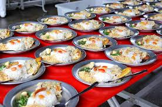

Promover a saúde alimentar através da boa alimentação e informar sobre os requisitos básicos de uma boa alimentação.
A culinária escolar é responsável pelo preparo da merenda dos alunos. Ela ajuda a garantir uma alimentação saudável e contribui para o bem-estar dos estudantes.
Uma alimentação saudável inclui alimentos como frutas, verduras, legumes e outros que fornecem nutrientes importantes para o corpo.
A merenda escolar é importante porque ajuda os estudantes a se alimentarem bem e a terem mais disposição para aprender.
Criar hábitos alimentares saudáveis desde cedo é importante para o crescimento e para uma vida mais saudável.